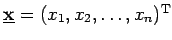
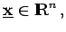
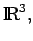
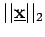
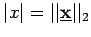

Inhalt Index DeskTop Bronstein
Lineare Algebra Matrizen Vektor- und Matrizennormen
Ist  ein n-dimensionaler Vektor, d.h.  dann sind die gebräuchlichen Vektornormen:
Im  in der elementaren Vektorrechnung, wird  als Betrag des Vektors bezeichnet. Der Betrag des Vektors  gibt die Länge des Vektors an.